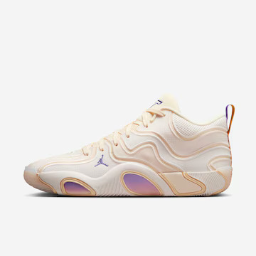
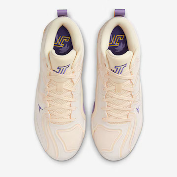
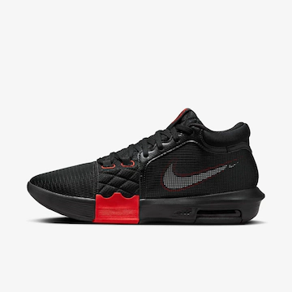

Catálogo de tenis
Jordan Tatum 3 - Offseason
R$ 1299,99


Feito para quem gosta de movimentar e agitar, o Tatum 3 oferece um comforto em um design leve, ajudando você a dominar o jogo da maneira mais suave possível.
Jordan Tatum 3 - Blueprint
R$ 1299,99


Parece familiar? Uma cabedal forte, mas flexível, proporciona a contenção e o alongamento que cortes rápidos e movimentos dinâmicos exigem. Então, quer você esteja quebrando recordes ou tornozelos, você pode entrar e sair da ação como o próprio campeão.
LeBron Witness 8
R$ 999,99


Pare o show com este LeBron Witness 8 e mostre que não há limites para seu talento e habilidades em grande escala. Este calçado elegante e ousadamente esculpido oferece estabilidade ao explodir e aterrissagens suaves quando você volta ao chão, permitindo que chefões como você e LeBron saltem, freiem e saltem de linha de base a linha de base.
Kobe 8 Protro - Lakers Home
R$ 1499,99


A tração em espinha tradicional possui um padrão inspirado na forma de um diamante que oferece aderência para rotações, mudanças de direção e ataques ao cesto a toda a velocidade. A assinatura e o logo do Kobe permitem homenagear a Mamba Mentality e o legado eterno do Kobe.
Nyjah 3 Premium
R$ 899,99


Flexível e extremamente leve, o Nyjah 3 oferece a próxima iteração do tênis de skate que é tão extraordinário quando Nyjah. O amortecimento Zoom Air é combinado com um solado em formato de favo de mel com bastante aderência, para que você possa manter o foco ao executar manobras.